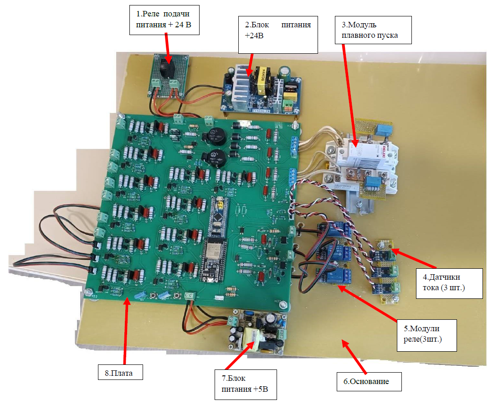
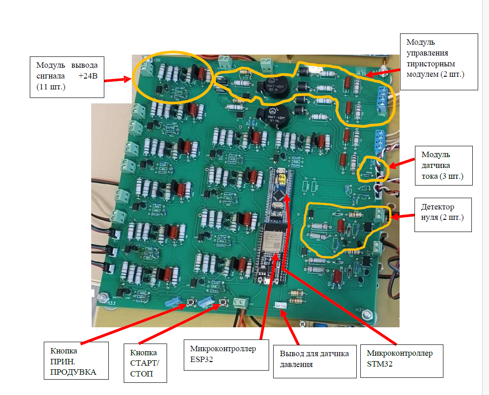

О проекте
⚠️ Первый крупный проект
Это мой первый серьёзный проект "под ключ": разработка единой платы управления для очистного сооружения, включающей силовую часть для плавного пуска электродвигателя и управление 8 соленоидными клапанами.
Статус: Проект доведён до стадии первого образца, но двигатель не запустился, а клапаны работали с ложными срабатываниями. Заказчик прекратил сотрудничество, но работа была безвозмездной — я предупреждал, что это мой первый опыт.
Извлечённые уроки
- Силовая часть требует тщательного расчёта — пусковые токи, индуктивность нагрузки, снабберные цепи
- ЭМС — критически важна — без правильной развязки и фильтрации ложные срабатывания неизбежны
- Защита от дребезга — аппаратная и программная, особенно для кнопок в промышленной среде
- Детекторы нуля — требуют тщательной настройки и защиты от помех
- Параметры запуска — должны быть калибруемыми под конкретный двигатель
Архитектура системы
STM32F103
Основной контроллер
FreeRTOS SPLСиловая часть
Тиристорный регулятор
Фазовое управление PWMКлапаны (8 шт)
Соленоидные клапаны
GPIO Защита от помехHMI
UART + DMA
CRC8 ПротоколЦифры
Характеристики
- Микроконтроллер: STM32F103C8T6
- ОСРВ: FreeRTOS
- Интерфейсы: UART + DMA, I2C, GPIO, EXTI
- Управление двигателем: Фазовое регулирование, детекторы нуля
- Управление клапанами: 8 каналов, импульсный режим
- Измерения: ADC (ток), I2C (давление/температура)
- Защита: IWDG, контроль тока, аварийные состояния
- Память: Flash для хранения параметров
Фото устройства


Кликните на любое изображение для увеличения
1. Алгоритм плавного пуска
Управление углом открытия тиристоров в зависимости от фазы и состояния двигателя.
// engineControl.c - обработка пересечения фаз
void PhaseCrossing1_Happened(EngineControlTypeDef *engineControlTypeDef)
{
static uint16_t openingAngleValue = 0;
static uint16_t CountDownCounter = VALUE_SAMPLES_COUNTER;
switch(engineControlTypeDef->Engine_State)
{
case EngineStarting:
{
if(engineControlTypeDef->OpeningAngle > FINISH_OPENGING_ANGLE)
{
openingAngleValue++;
if(openingAngleValue >= engineControlTypeDef->StartingTime)
{
// Плавное уменьшение угла открытия
engineControlTypeDef->OpeningAngle =
engineControlTypeDef->OpeningAngle -
(engineControlTypeDef->OpeningAngle / CountDownCounter);
openingAngleValue = 0;
if(CountDownCounter > 0) CountDownCounter--;
}
}
else
{
engineControlTypeDef->Engine_State = EngineStarted;
}
} break;
case EngineStopping:
{
if(engineControlTypeDef->OpeningAngle < STARTING_OPENING_ANGLE)
{
openingAngleValue++;
if(openingAngleValue >= engineControlTypeDef->StoppingTime)
{
// Плавное увеличение угла открытия (торможение)
engineControlTypeDef->OpeningAngle =
engineControlTypeDef->OpeningAngle +
((180 - engineControlTypeDef->OpeningAngle) / CountDownCounter);
openingAngleValue = 0;
if(CountDownCounter > 0) CountDownCounter--;
}
}
} break;
}
}2. Детекторы нуля и борьба с помехами
Прерывания по пересечению нуля с защитой от повторного срабатывания.
// engineControl.c - обработчики EXTI
void EXTI1_IRQHandler()
{
if(GPIO_ReadInputDataBit(GPIOA, ZERO_DETECTOR_1) == 0)
{
engineControl->ZeroDetector_1 = ZeroDetectorHappened;
engineControl->TimeCounterCrossingPhase = 0;
engineControl->TimeCounterPhaseCorrecting = 0;
// Боремся с повторным срабатыванием от дребезга
EXTI->IMR &= ~EXTI_IMR_MR1;
}
EXTI_ClearFlag(EXTI_Line1);
}
void EXTI2_IRQHandler()
{
if(GPIO_ReadInputDataBit(GPIOA, ZERO_DETECTOR_2) == 0)
{
engineControl->ZeroDetector_2 = ZeroDetectorHappened;
EXTI->IMR &= ~EXTI_IMR_MR2; // Отключаем до следующего цикла
}
EXTI_ClearFlag(EXTI_Line2);
}// engineControl.c - контроль чередования фаз
void CheckPhaseAlgoritm(EngineControlTypeDef *engineControlTypeDef)
{
EXTI->IMR |= EXTI_IMR_MR1;
EXTI->IMR &= ~EXTI_IMR_MR2;
engineControlTypeDef->TimeCounterPhaseCorrecting = 0;
while (engineControlTypeDef->ZeroDetector_1 != ZeroDetectorHappened)
{
WaitZeroDetector(engineControlTypeDef, 6);
}
// Засекаем время до срабатывания второго детектора
if (engineControlTypeDef->TimeCounterPhaseCorrecting < PHASE_CORRECTING_TIME)
{
AlarmState(engineControlTypeDef); // Слишком мало времени
}
else if (engineControlTypeDef->TimeCounterPhaseCorrecting > PHASE_CORRECTING_MAX)
{
AlarmState(engineControlTypeDef); // Слишком много времени
}
}3. Управление 8 клапанами с конечным автоматом
Сложный конечный автомат для управления серией импульсов клапанов.
// valvesControl.c - основной цикл управления
if(valvesStateEnum == ImpulseActive)
{
if (timeCounter >= (valvesImpulseParametersTypeDef.ImpulseActive / TIM2_TIME))
{
valvesStateEnum = ImpulsePause;
ValveSetState(&valveControlArray[valvesCounter], ImpulsePause);
timeCounter = 0;
}
}
else if(valvesStateEnum == ImpulsePause)
{
if (timeCounter >= TIM2_ONE_SECOND_COUNTER)
{
secondsCounter++;
timeCounter = 0;
}
if (secondsCounter >= valvesImpulseParametersTypeDef.ImpulsePause)
{
valvesCounter++;
if (valvesCounter >= VALVES_COUNT)
{
valvesCounter = 0;
betweenCyclesCounter++;
if(betweenCyclesCounter < valvesImpulseParametersTypeDef.BetweenCyclesCount)
{
valvesStateEnum = PauseBetweenCycles;
}
else
{
betweenCyclesCounter = 0;
valvesStateEnum = SeriesPeriod;
}
}
else
{
valvesStateEnum = ImpulseActive;
}
secondsCounter = 0;
}
}// valvesControl.c - таймер для клапанов
void TIM2_IRQHandler()
{
BaseType_t xHigherPriorityTaskWoken = pdFALSE;
xSemaphoreGiveFromISR(ValvesTimer_Semaphore, &xHigherPriorityTaskWoken);
if (xHigherPriorityTaskWoken == pdTRUE)
{
portEND_SWITCHING_ISR(xHigherPriorityTaskWoken);
}
TIM_ClearITPendingBit(TIM2, TIM_IT_Update);
}4. Обмен с HMI через UART + DMA + CRC
Эффективный обмен данными с панелью оператора.
// hmi_interaction.c - инициализация DMA
void DMA_init(uint8_t *dataFromUART, uint8_t *dataToUART)
{
// Канал 5 - приём
DMA_InitStructure.DMA_BufferSize = DMA_BUFFER_COMMAND_SIZE;
DMA_InitStructure.DMA_DIR = DMA_DIR_PeripheralSRC;
DMA_InitStructure.DMA_MemoryBaseAddr = (uint32_t)dataFromUART;
DMA_InitStructure.DMA_PeripheralBaseAddr = (uint32_t)&USART1->DR;
DMA_InitStructure.DMA_Mode = DMA_Mode_Circular;
DMA_Init(DMA1_Channel5, &DMA_InitStructure);
// Канал 4 - передача
DMA_InitStructure.DMA_DIR = DMA_DIR_PeripheralDST;
DMA_InitStructure.DMA_MemoryBaseAddr = (uint32_t)dataToUART;
DMA_Init(DMA1_Channel4, &DMA_InitStructure);
}// hmi_interaction.c - расчёт CRC8
uint8_t CalculateCRC8(uint8_t *data, size_t len)
{
uint8_t crc = 0xff;
size_t i, j;
for (i = 0; i < len; i++) {
crc ^= data[i];
for (j = 0; j < 8; j++) {
if ((crc & 0x80) != 0)
crc = (uint8_t)((crc << 1) ^ POLYNOMIAL);
else
crc <<= 1;
}
}
return crc;
}5. Сохранение параметров во Flash
Параметры запуска и работы клапанов сохраняются между перезагрузками.
// flash.c - запись параметров
void Flash_WriteParameters(uint8_t pageNumber, uint32_t *dataArray, uint8_t lengthArray)
{
uint32_t pageAddress = pageNumber * 1024 + FLASH_PAGE_ADDRESS;
FLASH_Unlock();
FLASH_ErasePage(pageAddress);
for(uint8_t i = 0; i < lengthArray; i++)
{
address = pageAddress + i * 4;
FLASH_ProgramWord(address, dataArray[i]);
}
FLASH_Lock();
}
// valvesControl.c - чтение параметров
if(Flash_Read(29, 0) == FLASH_WRITED)
{
valvesImpulseParametersTypeDef->ImpulseActive =
(Flash_Read(31, 1) | Flash_Read(31, 2) << 8);
valvesImpulseParametersTypeDef->ImpulsePause =
(Flash_Read(31, 3) | Flash_Read(31, 4) << 8) * 1000;
}6. Измерение тока и защита
Аналоговый вход для контроля тока двигателя.
// engineControl.c - расчёт тока
int16_t SolveCurrent(uint16_t ADC_value)
{
static int32_t U_ADC = 0;
static int32_t U_ADC_current = 0;
static int32_t result = 0;
U_ADC = (ADC_value * ADC_U_REF) / ADC_BIT_DEPTH;
U_ADC_current = ((400 * U_ADC - 13200) / 267) + 50;
result = ((60 * U_ADC_current - 3000) / 400) - 30;
return result;
}
// В основном цикле задачи
current_1 = SolveCurrent(ADC1->JDR1);
if(abs_for_current(current_1) > CURRENT_MAX)
{
MaxCurrent_Alarm(&engineControlTypeDef);
}7. Многозадачность FreeRTOS
Разделение функционала на независимые задачи.
// main.c - создание задач
int main(void)
{
// Создание семафоров и очередей
StartEngine_Semaphore = xSemaphoreCreateCounting(10, 0);
ValvesImpulseParameters_Queue = xQueueCreate(10, sizeof(ValvesImpulseParametersTypeDef));
// Задачи
xTaskCreate(EngineControl_Task, "EngineControl_Task", 256, NULL, 8, NULL);
xTaskCreate(HMI_Interaction_Task, "HMI_Interaction_Task", 256, NULL, 7, NULL);
xTaskCreate(ValvesControl_Task, "ValvesControlTask", 256, NULL, 8, NULL);
xTaskCreate(IWatchDog_Task, "IWatchDog_Task", 128, NULL, 8, &IWatchDog_Handler);
vTaskStartScheduler();
}// iwatchdog.c - сторожевой таймер
void IWatchDog_Task(void *pvParameters)
{
IWatchDog_init(); // IWDG_Prescaler_32, Reload 125 (100 мс)
while(1)
{
vTaskDelay(50);
IWDG_ReloadCounter(); // Сбрасываем каждые 50 мс
}
}8. Аппаратная и программная борьба с дребезгом
Промышленная среда требует особого подхода к обработке кнопок.
// hmi_interaction.c - обработка кнопок
void EXTI0_IRQHandler()
{
if (GPIO_ReadInputDataBit(GPIOA, START_STOP_BUTTON) == 0)
{
// Сразу отключаем прерывания для борьбы с дребезгом
EXTI->IMR &= ~EXTI_IMR_MR0;
EXTI->IMR &= ~EXTI_IMR_MR3;
BaseType_t xHigherPriorityTaskWoken = pdFALSE;
xSemaphoreGiveFromISR(StartEngine_Semaphore, &xHigherPriorityTaskWoken);
if (xHigherPriorityTaskWoken == pdTRUE)
{
portEND_SWITCHING_ISR(xHigherPriorityTaskWoken);
}
}
EXTI_ClearFlag(EXTI_Line0);
EXTI_ClearFlag(EXTI_Line3);
}Почему двигатель не запустился?
Анализируя код сейчас, вижу основные причины:
- Недостаточный расчёт силовой части — пусковые токи оказались выше расчётных, тиристоры не открывались полностью
- Помехи от двигателя — влияли на детекторы нуля, алгоритм сбивался
- Отсутствие обратной связи — не было контроля реальной скорости вращения, только разомкнутое управление по углу
- Ложные срабатывания клапанов — из-за наводок по цепям питания, не хватило развязки
Сейчас я бы добавил: оптронную развязку, снабберные цепи, фильтры на входах детекторов, программную фильтрацию измерений и замкнутый контур регулировки.